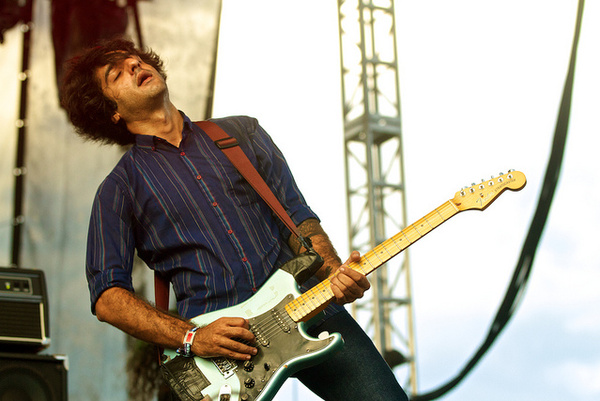
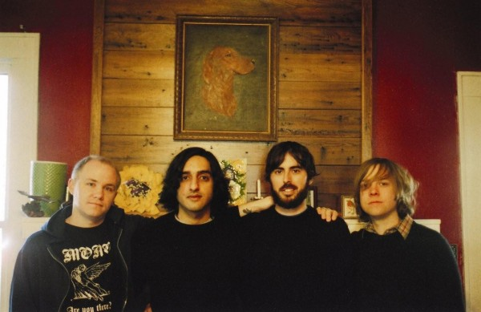

概览
Explosions In The Sky
| 地区： | United States of America 美国 |
| 风格： | 后摇 Post-Rock, 氛围音乐 Ambient, 电影配乐 Film Score |
档案
Explosions in the Sky是美国德州团，他们成团不到三年，第一张正它是用来形容后摇滚在情绪堆栈到最高潮的时候，吉他的破音爆出一片难以形容的巨大音墙。被称为大爆炸的原因还有疯狂的鼓点释放出巨大的能量，因为整个乐团在同一个点进入这种抓狂的状态，所以听CD的时候常常有人会被吓一跳！这种类型的著名乐团，当然就是Mogwai，不过在情绪方面，Explosions in the Sky比较多元化，歌的长度也不像Mogwai那么长。 静谧悠远的铺陈，配器音色的转折，将张力堆栈到临界；情绪一下就被牵动，随着音乐起伏，时而气如游丝、时而充满能量。来自美国德州的Explosions In The Sky和来自英伦诸岛的同类型团体相较，少了一点阴蕴内沉的气息，多了如沙漠般荒凉的地景刻画。2001年，推出第一张专辑，马上获得媒体网络乐评的青睐，成为近来最令人期待的后摇滚之音！

老实说，如果你是後摇滚乐迷，应该要毫不犹豫地把天空大爆炸的专辑加入你的收藏当中，来自德州奥斯汀的天空大爆炸以三把吉他的能量将天空爆破，犹如一道白色闪电划破天际，其高频足以震摄大地之万物。如果你对後摇滚一无所知，或者你不是後摇滚爱好者，认为後摇滚这个名词只是骗人的玩意儿，那麼你更应该来听听Explosions in the sky，这个年轻的四人新乐团会告诉你後摇滚不只是後摇滚，打破你的成见，让你对後摇滚这一种类的乐风另眼相看。 无论你是否知道加拿大的Godspeed You Black Emperor或者是英国的Mogwai，这一切都不再重要，因为天空爆炸已经拥有其独特不可取代的元素，一个值得你静心聆听的乐团。
该如何解释这个成军两年半的乐团所发行的第二张专辑在我心目中所拥有的地位？就算抓破头进而把头发拔光也无法利用完整的句子来描述这种难以言喻的悸动，一言难尽，千万言也无法道出。只好俗气的用上两个简单的文字：经典。或许大喇喇的把『经典』这一个名词加诸在Explosions in the Sky的身上会令一些资深的音乐聆赏者感到过誉，但是这个年轻的乐团的确在我的心灵深处烙下了不可抹灭的深刻烙印，狠狠的，就像扒光了身上的所有衣物残酷地将我绑在刑求台上，再将被熊熊火焰染红的炽热铁块一股脑的往我身上猛砸。
天空中的大爆炸，轰隆的在我身体中刹然引爆，留下了满地屍块，享受著被引爆的快感。

这个来自德州Austin的四人乐队，仅仅利用了传统三件式的摇滚乐器就成功的营造出令人颤栗史诗画面。《Those Who Tell the Truth Shall Die》专辑封面利用灰暗的色调衬底，以金黄色的温暖光亮将天使的出现披上了无穷的希望。正在壕沟里的士兵苟延残喘，无情的子弹正急速地朝向脆弱而恐惧的头部而来。钢盔(？)这种圆形的笨重物体如何能抵抗心中那种因无助而害怕发抖的恐惧？只有上帝，能够暂时解放无辜士兵的心灵，即使是来自飞机上的灯光也无所谓了，我真的看到了天使，带著大量吗啡的天使让缺腿的士兵们安心离开了丑陋无情的世界。
在《Those Who Tell the Truth Shall Die》发行之前，Explosions in the Sky曾经录制了一张名为：《How Strange,Innocence》的作品，这张作品只少量发行了三百张，据该团团员自己说道：乐团的某些人对於第一张专辑感到非常骄傲，也非常的喜爱这张作品，而其他人却想把那三百份CD通通买回来烧掉。其实第一张作品可以算是不过不失之作，没有特别的过人之处，但却也明白的宣示了Explosions in the Sky的创作理念：Instrutment Rock，仅仅利用乐器间的交互弹奏来激汤出令人兴奋的跳跃音符。在《How Strange Innocence》之中，可以明显的见到他们的音乐架构在一般後摇滚/缓飙乐团的常用的手法上：缓慢、急速、缓慢。
在聆听该团的第二张专辑《Those Who Tell the Truth Shall Die》之时，我承认有部分的片段令我联想到了Godspeed You Black Emperor！那种荒凉颓败的景象顿时在我脑海中浮现，但是Explosions in the Sky的凉颓败的景象顿时在我脑海中浮现，但是Explosions in the Sky的音乐比起Godspeed来又多了一份粗糙原始的情感，那种急速的爆炸声响甚至比Mogwai的Feedback音墙更具渲染力。但是千万不要以为他们仅仅是玩弄音箱及效果器的乐团，Explsions in the Sky在爆炸与爆炸之间的铺陈弹奏，那种极有感情的音符，远远的摆脱了一大票後摇滚乐团。不得不承认这张作品是令我痛哭流涕的杰作。如果你还没听过Explosions in the Sky，就去找来听吧，文字，老早已经不再重要，重要的是让你的听觉沉溺在音符中，去感受他们想要告诉你的故事。
音乐不断的从耳机里面传来，天使，走了吗？就算天使早已远离，战争早已结束，那种酷似吗啡的药效，仍然在我的血液里残存著。